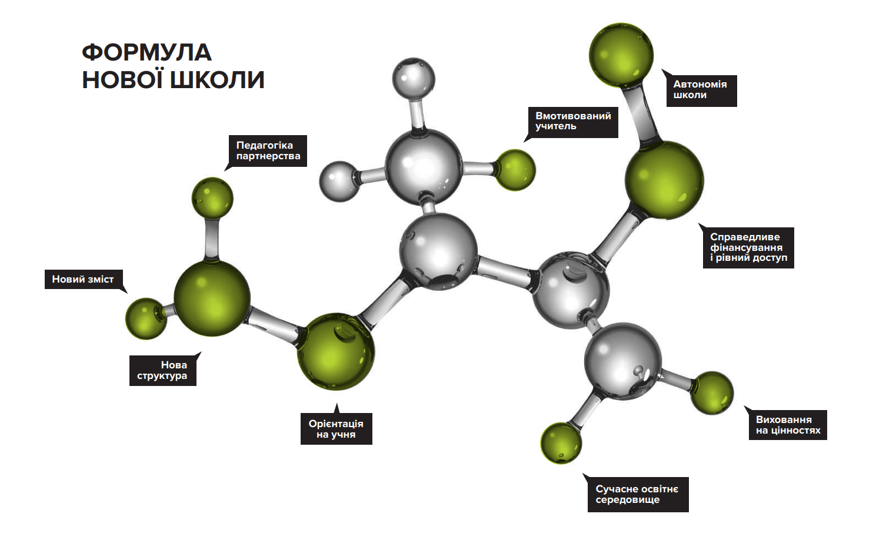
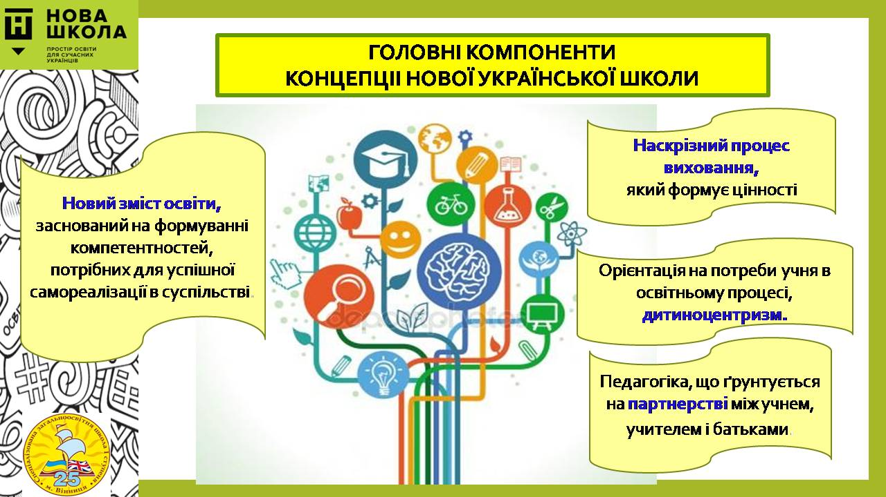

Головна мета – створити школу, в якій буде комфортно навчатись і яка даватиме учням не тільки знання, а й уміння застосовувати їх у повсякденному житті, школу, де вчать критично мислити, експериментувати та не боятися висловлювати власну думку.
Усі перелічені компетентності однаково важливі й взаємопов’язані. Кожну з них діти набувають під час вивчення різних предметів на всіх етапах освіти. Спільними для всіх компетентностей є такі вміння:
- уміння читати і розуміти прочитане
- уміння висловлювати думку усно і письмово
- критичне мислення
- здатність логічно обґрунтовувати позицію
- виявляти ініціативу
- творити
- уміння вирішувати проблеми,
оцінювати ризики та приймати рішення - уміння конструктивно керувати емоціями
- застосовувати емоційний інтелект
- здатність співпрацювати в команд
.jpg)
У рамках запровадження компетентнісного підходу буде створено нову систему вимірювання й оцінювання результатів навчання. Зокрема буде змінено зміст зовнішнього незалежного оцінювання.
Електронні підручники для навчання в умовах воєнного стану розміщено у вільному доступі
На порталі Державної наукової установи «Інститут модернізації змісту освіти» розміщено електронну бібліотеку , яка налічує 1 335 підручників і посібників. Зокрема, електронні версії підручників для закладів загальної середньої освіти з 1-го до 11-го класу з усіх предметів, різних видань, для корінних народів, національних меншин та осіб з особливими освітніми потребами тощо.
Також до вирішення актуальних питань сфери освіти, зокрема забезпечення підручниками, активно долучається відповідальний бізнес.
- Видавництво «Ранок» за сприяння МОН і міжнародних партнерів прагне підтримати учнів, які мають право здобувати якісну системну освіту. Учням і педагогам видавництво надає відкритий доступ до електронних підручників для 1-5 класів з усіх предметів.
Незалежно від місця перебування здобувачів освіти та вчителів, вони можуть вільно використовувати унікальний контент. Учні та вчителі отримають матеріали для відпрацювання необхідних навичок, а також доступ до чисельної мультимедійної бази контенту. Завдяки підручникам також буде реалізовуватися принцип доступності та універсальності освітнього середовища для дітей з особливими потребами. Навчальний матеріал для учнів побудовано на базі та з використанням підручників, кожен із яких має гриф «Рекомендовано МОН України» та є переможцем Всеукраїнського конкурсу підручників. Електронні ресурси є унікальними та виходять за межі функціоналу pdf-версій підручників. Безоплатний доступ до підручників можна отримати на сайті.
- Освітня компанія «EdPro» відкрила безоплатний доступдо електронних підручників до кінця року. На цей термін буде також надано безкоштовний доступ до інших посібників компанії та підручників, розміщених на сервері.
Крім того, на сайті Всеукраїнської школи онлайн розміщено відеоуроки, тести та матеріали для самостійної роботи з 18 основних предметів для дистанційного та змішаного навчання учнів 5-11 класів та методичної підтримки вчителів.